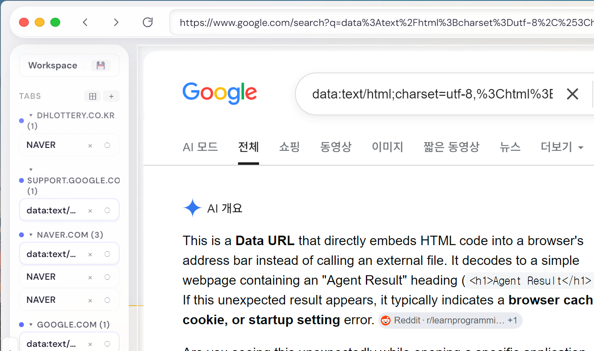
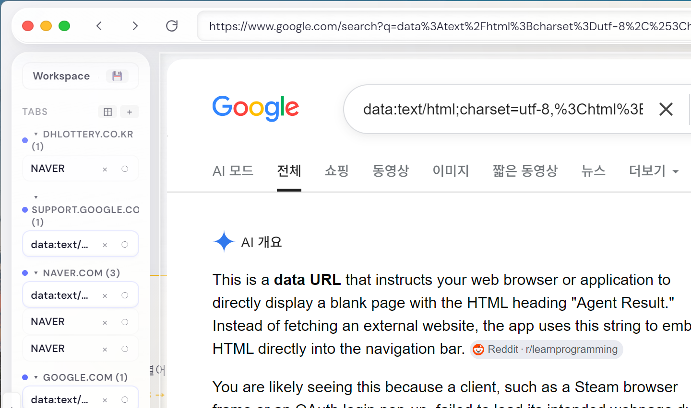
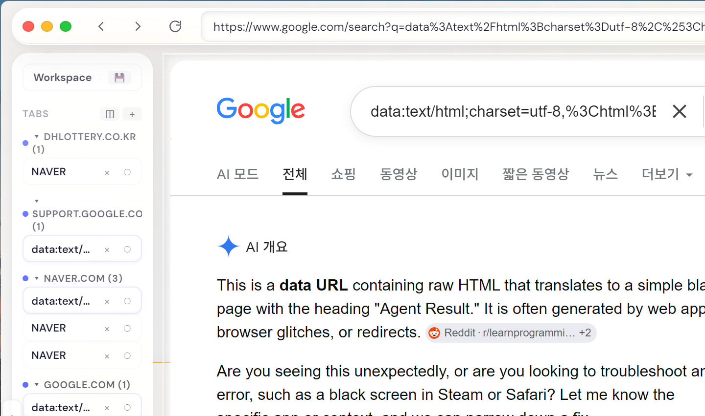
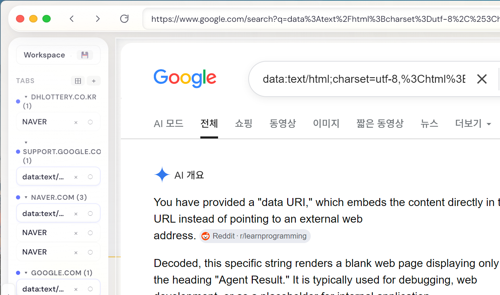

Hermes Browser V16
AI-powered Electron browser with MCP-First architecture for engineers. 12 LLM providers · Local-first + BYOK · Cowork for Engineers. 56 MCP tools · 229 tests · zero lock-in.
Three Differentiators
MCP-First Architecture
Every capability exposed as MCP tools. External AI agents (Claude, GPT, Hermes AI) fully control the browser via HTTP bridge. SSE streaming, multi-agent locks, git integration.
Local-First + BYOK
LM Studio, Ollama, OpenAI, Anthropic, Google, OpenRouter, MiniMax, BrowserOS, Naver HyperCLOVA X. Zero provider lock-in. 30-second swap.
Cowork for Engineers
Files + browser + AI + Git. BLDC circuit / BOM / Gerber / datasheet automatic context. Cross-platform (Windows/WSL). Real-time watch + multi-agent locks + leases + atomic bulk edit + git status/log/diff/blame.
30-Second Quick Start
Test & run locally:
cd /mnt/c/Users/qqwer/Desktop/Hermes/hermes-browser
npm test # 157 unit + 26 cowork + 46 eval (~3 sec)
npm start # Launch Electron (Miraecle window)Connect from external AI agents via HTTP bridge on port 8780:
TOKEN=$(curl -s http://127.0.0.1:8780/auth/token | jq -r .token)
curl -X POST http://127.0.0.1:8780/mcp/tool \\
-H "Authorization: Bearer ***" \\
-d '{"name":"cowork_list","args":{"path":"C:\\\\Users\\\\qqwer\\\\Hermes-Workspace\\\\demo-circuits"}}'V12 → V16 — 10-Day Sprint
- Day 1: OS light/dark sync (chrome.html follows OS theme via nativeTheme)
- Day 2: BYOK + 10 LLM provider presets + test connection
- Day 3: MiniMax endpoint fix (/anthropic + X-Api-Key)
- Day 4: Cowork + 49 tools + UI spring motion + Glass
- Day 5: Cross-platform path fix + 회로 demo (BD69730FV)
- Day 6: Status bar + Bento + Theme toggle polish
- Day 7: Cmd+K command palette + Workspace switcher + Cowork caching
- Day 8: V14 UI polish (mesh bg + tab thumbnail) + Korean LLM (HyperCLOVA X)
- Day 9: Cowork v3 SSE streaming watch + Real tab thumbnails + Pages auto
- Day 10: V16 design polish (vertical tabs + split view + settings panel) + Cowork v4 (backup/exclude/diff)
- Day 11: V17 final polish (AI sidebar auto-expand + workspace tags + shortcut modal + font scale) + Cowork v5 (lock/lease/task queue/shared state) + Tab thumbnail gallery
- Day 12: V18: Cowork v6.5 (search-replace + autoLock + atomic rollback + changeSummary) + Cowork v6 (git_status/log/diff/blame/show) + Pages V18 (실사용 workflow gallery)
Architecture
┌────────────────────────────────────────────────────────┐
│ Renderer (src/chrome.html + renderer.js) │
│ - Bento + Glass (40px blur) + Status bar │
│ - Cmd+K command palette (16 commands) │
│ - Settings panel + Vertical tabs + Split view │
│ - Tab thumbnail (real screenshot 480x300) │
└─────────────────────┬──────────────────────────────────┘
│ IPC (preload.js)
┌─────────────────────┴──────────────────────────────────┐
│ Main Process (main.js + electron) │
│ - Tab manager (WebContentsView per tab) │
│ - Native theme sync + Light/dark override │
│ - Capture page IPC + Set tab thumbnail │
└─────────────────────┬──────────────────────────────────┘
│ Same process
┌─────────────────────┴──────────────────────────────────┐
│ MCP Bridge (mcp-bridge.js) — http://127.0.0.1:8780 │
│ - 56 tools + Bearer auth + Rate limit │
│ - SSE watch stream /cowork/watch/events │
└─────────────────────┬──────────────────────────────────┘
│
┌─────────────────────┴──────────────────────────────────┐
│ Agent Service (src/agent/index.js) │
│ - Browser agent (navigate/click/fill/screenshot) │
│ - Cowork (12 tools: list/read/grep/search/stat/ │
│ watch/read_tail/diff/search_replace/ │
│ watch_list/watch_unsubscribe/watch_events) │
│ - Reading list + Workspace + Session recorder │
└────────────────────────────────────────────────────────┘📸 실제 사용 워크플로우 (Live Screenshots)
💬 AI 패널 + BYOK

12 LLM providers 직접 통합. HyperCLOVA X, MiniMax, LM Studio 모두 한 클릭 swap.
⌘K 커맨드 팔레트

Cmd+K 한 번에 모든 명령. V18: 19 commands (vertical tabs, split view, tab gallery 등).
⚙️ 설정 패널

Sliders + Toggles + Sections. 폰트 크기, 메시 BG, AI 자동 펼침, 테마 등.
📂 Cowork 워크스페이스

BLDC 회로 / BOM / Gerber 자동 context. Cross-platform (Windows ↔ WSL).
📡 실시간 Watch (SSE)

파일 변경 즉시 SSE stream으로 이벤트 전달. AI 에이전트가 실시간 반응.
🔧 Git Integration

V18: git_status / git_log / git_diff / git_blame / git_show — 5개 MCP 도구.
Use Cases
🔌 회로 설계 워크플로우
BOM.csv 자동 context · Gerber 검증 · datasheet cross-reference · 실시간 파일 watch
🤖 AI 에이전트 통합
Claude Code / Cursor / Cline 등 MCP 지원 에이전트가 즉시 cowork 도구 사용 가능
🎨 프리미엄 UI
AsIDE/Arc급 디자인 — Glass + Bento + Spring motion + Mesh background
🇰🇷 한국어 LLM
Naver HyperCLOVA X + clovastudio — 한국어 특화 LLM 직접 통합
📡 실시간 watch
SSE streaming watch — 파일 변경 즉시 에이전트에 알림
🔄 Lock-in 없음
12 LLM providers — 30초 안에 swap, 데이터 외부 종속 0
🤝 Multi-Agent Concurrency
V17: advisory lock + lease + priority task queue + shared state. 여러 AI 에이전트가 동시에 같은 회로 작업해도 안전.
🎬 Tab Thumbnail Gallery
V17: 자동 background 캡쳐 + hover preview 640x400 + 갤러리 모달. 모든 탭을 한눈에.